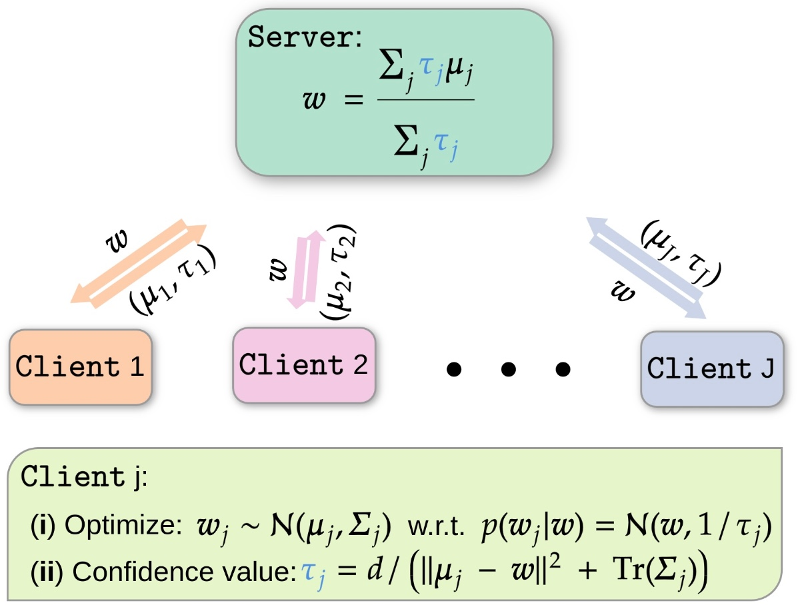

Confidence-aware Personalized Federated Learning via Variational Expectation Maximization
CVPR 2023* = Co-first authorsProceedings of the IEEE/CVF Conference on Computer Vision and Pattern Recognition

In brief
pFedVEM treats the shared model in personalized federated learning as a latent variable in a hierarchical Bayesian model, optimized with variational expectation maximization. The math yields a closed-form per-client confidence value — the inverse of parameter uncertainty plus deviation from the global model — that replaces ad-hoc data-size weighting during aggregation and adapts each client's regularization strength, at the cost of one extra scalar per message.
Key takeaways
- A principled fix for an inconsistency in PFL: theory usually analyzes unweighted averages while practice weights by data size — here the aggregation weights fall out of the model itself as closed-form confidence values (inverse of variational uncertainty plus model deviation).
- Confidence-weighting beats data-size weighting in two concrete ways: duplicated or highly correlated local data no longer inflates a client's influence, and outlier clients far from the population distribution are automatically down-weighted.
- The same confidence value rescales each client's KL regularization: data-rich clients absorb more of the global model, while strongly deviating clients get more freedom to personalize.
- Evaluated beyond the usual label-distribution skew: also under label concept drift (built from CIFAR100/SUN397 superclasses) — a harder, rarely studied heterogeneity — plus data-quantity disparity.
- Competitive under mild heterogeneity and significantly ahead of state-of-the-art PFL frameworks in highly heterogeneous settings, with communication cost essentially unchanged (one extra scalar).
Abstract
Federated Learning (FL) is a distributed learning scheme to train a shared model across clients. One common and fundamental challenge in FL is that the sets of data across clients could be non-identically distributed and have different sizes. Personalized Federated Learning (PFL) attempts to solve this challenge via locally adapted models. In this work, we present a novel framework for PFL based on hierarchical Bayesian modeling and variational inference. A global model is introduced as a latent variable to augment the joint distribution of clients' parameters and capture the common trends of different clients, optimization is derived based on the principle of maximizing the marginal likelihood and conducted using variational expectation maximization. Our algorithm gives rise to a closed-form estimation of a confidence value which comprises the uncertainty of clients' parameters and local model deviations from the global model. The confidence value is used to weigh clients' parameters in the aggregation stage and adjust the regularization effect of the global model. We evaluate our method through extensive empirical studies on multiple datasets. Experimental results show that our approach obtains competitive results under mild heterogeneous circumstances while significantly outperforming state-of-the-art PFL frameworks in highly heterogeneous settings.
BibTeX
@inproceedings{zhu_pfedvem,
title = {Confidence-aware Personalized Federated Learning via Variational Expectation Maximization},
author = {Zhu, Junyi and Ma, Xingchen and Blaschko, Matthew B.},
year = {2023},
booktitle = {Proceedings of the IEEE/CVF Conference on Computer Vision and Pattern Recognition},
url = {https://arxiv.org/abs/2305.12557},
}